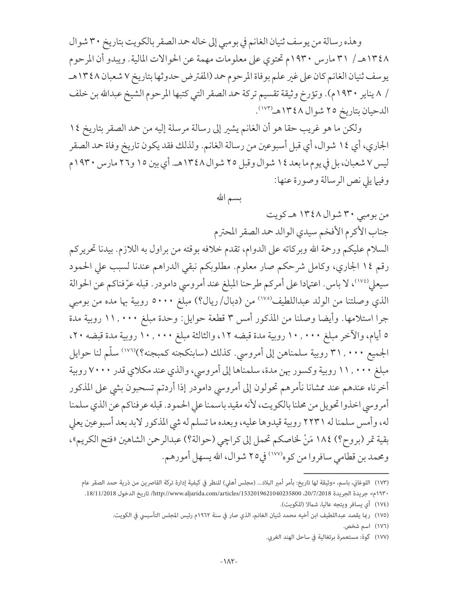

30 Shawwal 1348 (31 March 1930) · Merchant letter from the Al-Saqr family papers
Mohammed bin Qatami sails from Goa: a letter from Bombay to Hamad Al-Saqr
What it is
Yousef Thunayan Al-Ghanim writes from Bombay to his uncle Hamad Al-Saqr in Kuwait about money transfers and cargo. At the end he reports that Abdulrahman Al-Shaheen in Fath Al-Karim and Mohammed bin Qatami sailed from Goa on 25 Shawwal 1348.
Why it matters
It puts Mohammed on the India run as a nakhuda in March 1930, between his 1913 and 1933 records and nine years before he was killed in the Majlis crisis.
Who is meant
The letter says only Mohammed bin Qatami. In 1930 the Mohammed of our family sailing to India as a nakhuda was Mohammed Abdulaziz Al-Qatami, confirmed by the family.
Page copies


Original text
English translation
Notes
The book prints the full letter on page 182 and a photo of the handwritten original on page 183. Only the part about the ships is quoted here. «كوه» is Goa, on India's west coast.
Others named
Sources
Dr Faisal Adel Al-Wazzan, Tijarat Al-Naql Al-Bahri fi Al-Kuwait min Khilal Sirat Hamad Abdullah Al-Saqr, Center for Research and Kuwaiti Studies, 2019, pages 182 and 183. A copy is saved in the family Drive.
Archive reference
- Al-Wazzan 2019, pp. 182 to 183 · رسالة يوسف ثنيان الغانم إلى حمد الصقر
How this text was made: Arabic text as printed in the book. English translation by Claude; please review.
Open in the interactive site